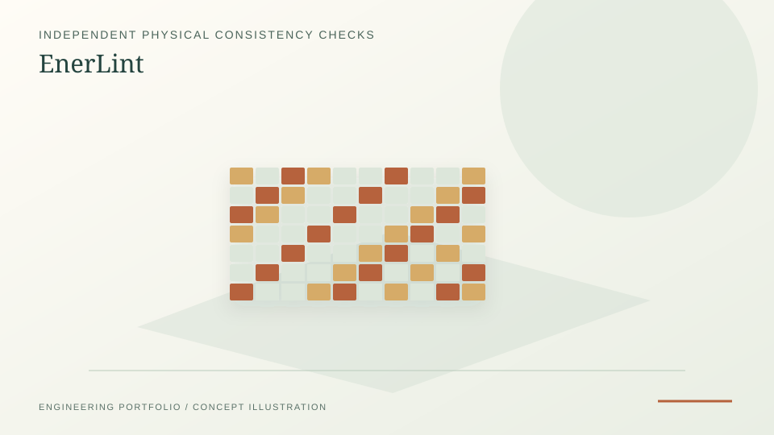

v0.1.0a0 alpha; no external validation or public PyPI/Zenodo release.
Independent open-source research / October 2026
EnerLint — Physical consistency checks
Alpha-stage independent checks on exported energy-model results. The first Python implementation tests declared mass, energy, and thermal-storage balances, rather than trusting solver convergence flags.
PythonpytestJSON/SI contractsSHA-256

PROJECT REFERENCE / ENERLINTFour analytical demonstration cases and explicit tolerances.
A compensating compressor error still passes the declared balance tests.
Research question
Do exported physical quantities satisfy the mass and energy relationships the modeller declared, and where are conservation checks insufficient?
Implemented foundation
The v0.1.0a0 public alpha includes four hand-constructed analytical examples, a strict JSON/SI input contract, SHA-256 linked machine-readable reports, and negative-control/fault-injection tests.
Important negative result
Six deliberately inconsistent perturbations are detected; a compensating compressor error still passes the balance checks. A pass is not proof of the original model, input data, or physics.
Open Energy Methods
EnerLint is the first public research-stage tool in the Open Energy Methods initiative, with openly documented scientific scope, roadmap, adapter contract and verification methodology.
Sources and reproducibility
Source and installation →
GitHub repository; alpha software and tests.
Benchmark methods and results →
Hand-constructed tests and scoped results.
Worked example →
Accessible explanation of a compensating error that passes.
Scientific scope →
Detailed limitations.
Open Energy Methods organization →
Independent open-source initiative.
What this does not establish
Review-stage v0.1.0a0 alpha, with no PyPI or Zenodo release claimed. The work does not establish external scientific validation, industrial qualification, certified operational control, procurement suitability, or nuclear safety use.